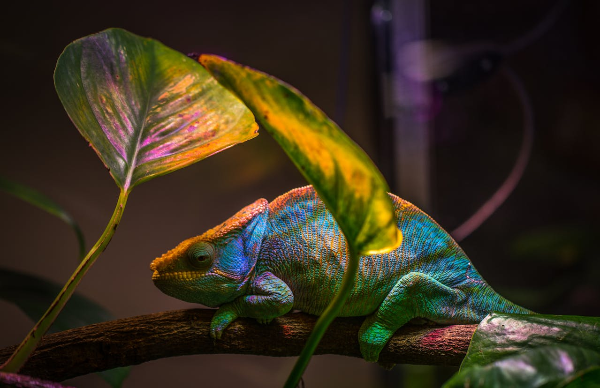

Os répteis são animais vertebrados que pertencem ao Filo Chordata, à classe Reptilia, e são divididos em quatro ordens: Testudines, Squamata, Crocodilia e Sphenodonta. Da ordem Testudines, fazem parte as tartarugas. A ordem Squamata é formada pelas serpentes e lagartos. A ordem Crocodilia é formada por crocodilos, jacarés, caimãs e gaviais. Da ordem Sphenodonta, fazem parte os tuataras. Além dos representantes de grupos atuais, também fazem parte dos répteis grupos extintos como os dinossauros. Esses animais que viveram no passado se diversificaram em linhagens e formas corporais incríveis, ocupando ambientes aquáticos e terrestres. Entre as linhagens reptilianas que sobreviveram à extinção em massa no fim da Era Mesozoica estão aquelas que deram origem aos répteis atuais.
Ovo amniótico: os répteis se desenvolvem a partir de um ovo amniótico, uma novidade evolutiva que permitiu aos primeiros amniotas explorar os hábitats mais secos e se fixar no ambiente terrestre. O ovo amniótico é formado por quatro membranas extraembrionárias, o âmnio, o alantoide, o córion e o saco vitelínico. Essas membranas protegem o embrião e fornecem um ambiente interno aquoso e estável para o desenvolvimento embrionário. A maioria dos ovos amnióticos dos répteis possuem uma casca mineralizada, com exceção de lagartos e serpentes. Pele grossa e impermeável: a pele dos répteis é formada por betaqueratina, uma forma dura da queratina que forma as escamas, estruturas características dos répteis. As escamas presentes no corpo de répteis como os crocodilos oferecem proteção contra lesões, predadores e a dessecação gerada pelo ambiente terrestre. As tartarugas também possuem escamas modificadas que formam suas carapaças. Reprodução: nos répteis a fecundação é interna e ocorre com o auxílio de um órgão copulador, com exceção dos tuataras, em que a transferência do espermatozoide do macho para a fêmea se dá a partir do contato cloacal. Respiração: a principal forma de respiração dos répteis é a respiração pulmonar, e seus pulmões são muito mais desenvolvidos do que os pulmões dos anfíbios, uma vez que a maioria dos répteis não realizam trocas gasosas a partir da pele, apenas através da respiração pulmonar. Apesar disso, alguns representantes usam outras partes do corpo para realizar as trocas gasosas. É o caso, por exemplo, de tartarugas aquáticas, que, além da respiração pulmonar, também conseguem realizar trocas gasosas através da faringe e da cloaca, e de muitas serpentes marinhas que também conseguem realizar trocas gasosas através da pele. Excreção: os répteis excretam os resíduos de seu metabolismo na forma de ácido úrico. O ácido úrico é menos tóxico do que a amônia (forma de excreção dos anfíbios) e necessita de pouca quantidade de água para ser diluído, portanto é uma forma de excreção mais concentrada. Muitos répteis também removem o sal de seu organismo através de glândulas de sal localizadas próximas às narinas. Circulação: o coração dos répteis não crocodilianos é formado por três câmaras, sendo dois átrios e um ventrículo que não é separado completamente, o que leva à mistura do sangue arterial e do sangue venoso. Já os répteis crocodilianos possuem coração com quatro câmaras, sendo dois átrios e dois ventrículos que são completamente separados, o que impede a mistura de sangue arterial e venoso no coração, porém o sangue ainda se mistura em um orifício denominado Foramen de Panizza, local onde a artéria do ventrículo direito se comunica com a artéria do ventrículo esquerdo.
As iguanas-marinhas, especialmente as encontradas nas Ilhas Galápagos, ingerem grandes quantidades de água salgada enquanto se alimentam no oceano. Por isso, elas possuem um mecanismo interessante para eliminar o sal em excesso ingerido através de glândulas especializadas situadas na região das narinas. Essas glândulas ajudam a filtrar e extrair o excesso de sal do sangue, permitindo que as iguanas eliminem o sal de forma eficaz. Para se livrarem do excesso de sal, elas frequentemente realizam “espirros de sal”. Esse comportamento envolve a expulsão de cristais de sal através das narinas, ajudando na eliminação do excesso de sal acumulado durante a ingestão de água do mar. A tartaruga-mordedora possui uma língua rosada e de aparência vermiforme que utiliza para atrair suas presas. Ela se mantém com a boca aberta realizando movimentos ondulatórios com a língua e, quando qualquer presa tenta mordê-la acreditando ser algum tipo de verme, a tartaruga a captura ao fechar as mandíbulas. A tartarugas possuem uma orelha média e uma orelha interna, porém a audição é bem pouco desenvolvida, o que justifica a falta de sons emitidos por esses animais. Ainda assim, muitos jabutis emitem sons agudos ou guturais durante o acasalamento. Para compensar a falta de audição, as tartarugas possuem olfato e visão aguçados. Uma característica interessante da reprodução das tartarugas, dos crocodilianos e alguns lagartos é que a temperatura do ninho onde botam seus ovos determina o sexo dos filhotes. Baixas temperaturas influenciam a formação de indivíduos machos enquanto altas temperaturas influenciam a formação de indivíduos fêmeas. As tartarugas-de-couro são as maiores tartarugas atuais, podendo chegar a 2 m e pesar 725 kg. As lagartixas que encontramos em nossas casas são um tipo de lagarto. Esses animais pequenos, ágeis e com hábitos noturnos possuem lamelas adesivas nos dedos que permitem a fixação em superfícies verticais e até mesmo que permaneçam de cabeça para baixo. A maioria dos lagartos possui olhos cobertos por pálpebras móveis, enquanto as serpentes não possuem pálpebras, mas têm olhos recobertos por uma membrana transparente. Os tuataras já foram muito comuns na Nova Zelândia, e a perda de suas populações se deve à introdução de animais exóticos na região, como roedores, gatos, cães e cabras, que predaram os tuataras ou destruíram o seu habitat natural. Ainda, os tuataras demoram entre dez e 20 anos para se tornarem sexualmente maduros, e por isso possuem uma das menores taxas de reprodução entre os répteis. Como diferenciar um crocodilo de um jacaré? A partir da morfologia da cabeça! Os crocodilos têm o focinho mais estreito, enquanto os jacarés possuem o focinho mais largo. Já os gaviais possuem focinhos extremamente delgados com dentes muito finos. Existe uma única espécie de gavial, encontrado em Burma, na Índia.